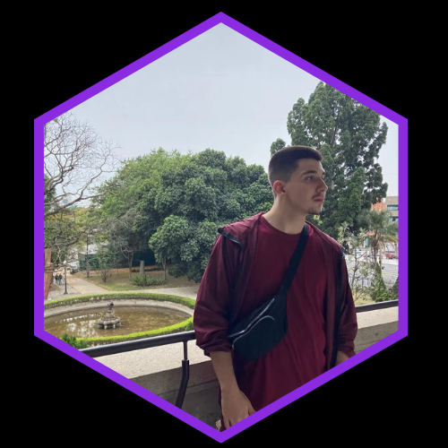
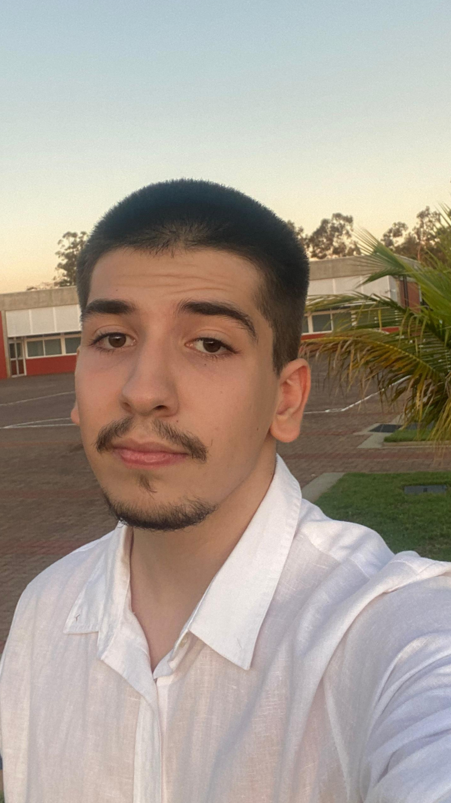

Miguel Cristófano Ederli.
Técnico em Desenvolvimento de Sistemas, cursando o 2º termo de Sistemas de Informação, programador iniciante e futuro Analista de Sistemas.


MUITO PRAZER, SOU O MIGUEL
Tenho 18 anos, sou natural de Presidente Prudente mas moro em Álvares Machado
Fiz toda meu ensino fundamental e médio na Escola SESI de Álvares Machado, e junto ao Ensino Médio, cursei Desenvolvimento de Sistemas no SENAI Santo Paschoal Crepaldi (Curso Técnico), onde aprendi sobre Fundamentos de Programação Orientada a Objeto, Hardware e Redes, Linguagem de Marcação, Programação Web (Back-End e Front-End), Sistemas operacionais, Programação Mobile, Banco de Dados e muito mais. Atualmente estou cursando o segundo termo de Sistemas de Informação na UNOESTE.
MEUS HOBBIES.
Jogar
Jogo constantemente jogos de PC, entre eles,
meus favoritos são:
- Genshin Impact
- Dead By Daylight
- Hollow Knight: Silksong
- Stardew Valley
- Undertale
- Life is Strange
Ler
Gosto também de ler, meus
livros favoritos são:
- Saga inteira de Harry Potter
- Daisy Jones and The Six - Taylor Jenkins Reid
- Os Sete Maridos de Evelyn Hugo - Taylor Jenkins Reid
- Me Chame Pelo seu Nome - André Aciman
- As Mil Partes do Meu Coração - Colleen Hoover
- Verity - Colleen Hoover
Assistir Filmes e Séries
Além disso, gosto de passar meu tempo
livre assistindo
séries e filmes, meus favoritos são:
- Frieren e a Jornada para o Além
- Wicked
- Anne com "E"
- Violet Evergarden
- A Viagem de Chihiro